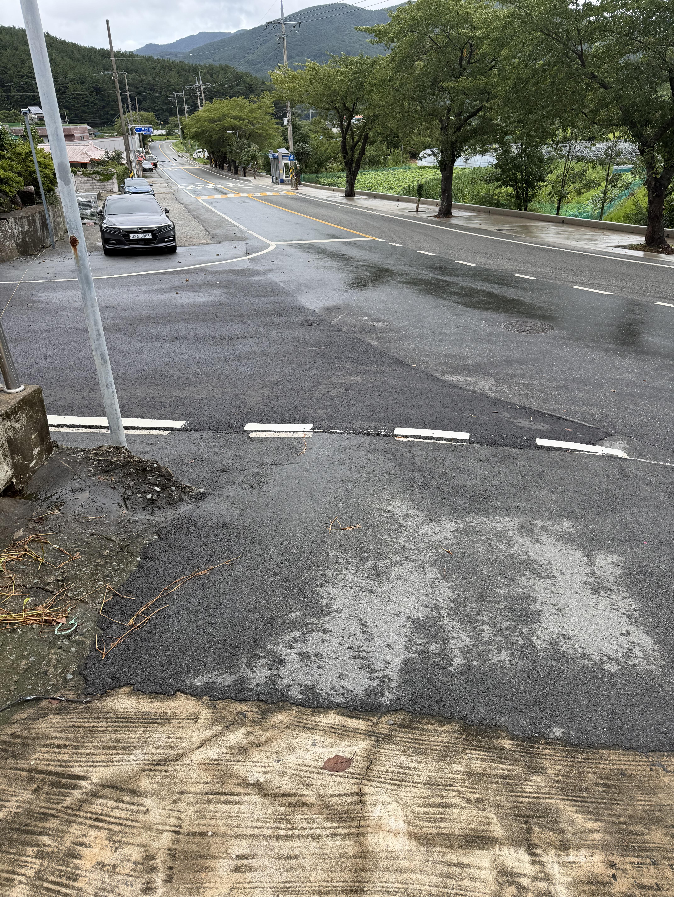
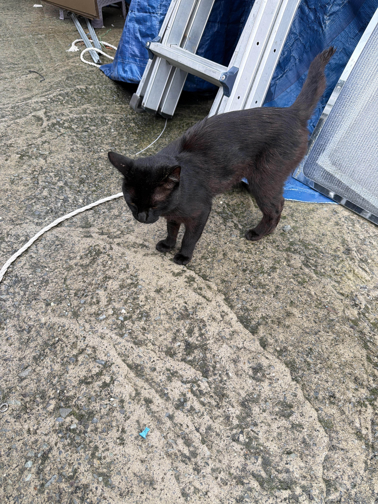

출근하면서 봤을때 물은 다빠짐
근데 떠내려온 차들이 도로 중간에 가끔씩 보임
산사태나서 흙더미 쏟아진곳도 꽤많음
이번에 돌아가신분 계신지역은 좀 심각하다고 들었음
그방향으론 갈일이 잘 없어서 가보진않음
어머니하시는 식당도 30cm정도 물차서 어제 하루종안 물푸는거 도와드림
직장사무실은 의외로 경사진 고지대라서 물이 거의안들어옴

사무실에 밥얻어먹으러오는 고양이도 살아있음

출근하면서 봤을때 물은 다빠짐
근데 떠내려온 차들이 도로 중간에 가끔씩 보임
산사태나서 흙더미 쏟아진곳도 꽤많음
이번에 돌아가신분 계신지역은 좀 심각하다고 들었음
그방향으론 갈일이 잘 없어서 가보진않음
어머니하시는 식당도 30cm정도 물차서 어제 하루종안 물푸는거 도와드림
직장사무실은 의외로 경사진 고지대라서 물이 거의안들어옴

사무실에 밥얻어먹으러오는 고양이도 살아있음
댓글
수집 당시 댓글 6개
오늘도야근이다 · 3 일 전
냉동블루베리 · 3 일 전
냥이는 어떻게 살아남은 거냐 ㄷㄷㄷ
백지영의쎄드설사 · 3 일 전
차원이동
영화자주봄 · 3 일 전
냥이는 목숨이 9개거든 아마 3,4개정도 코인쓰고 부활했을거임
순선환 · 3 일 전
Nine lives none left
한강뷰 · 3 일 전
물야호~